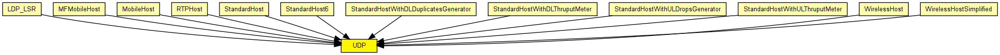
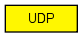

UDP protocol implementation, for IPv4 and IPv6.
The UDP protocol header is represented by the class UDPPacket.
Communication with clients (applications)
The module can (should) be connected to several applications. For sending an UDP packet, the application should attach an UDPControlInfo object to the payload, and send it to UDP. UDP will also attach an UDPControlInfo object to any payload message in sends up to the application.
For receiving UDP packets, the connected applications should first "bind" to the given UDP port. This can be done by sending an arbitrary message with message kind UDP_C_BIND and an UDPControlInfo attached with srcPort filled in.
If there is only one app which doesn't bind to any port, it will receive all packets.
Communication with the IP (IPv4/IPv6) layer
The UDP model relies on sending and receiving IPControlInfo/IPv6ControlInfo objects attached to UDPPacket objects as control info (see cMessage::setControlInfo()).
See also: UDPPacket, UDPControlInfo, UDPCommandCode
The following diagram shows usage relationships between types. Unresolved types are missing from the diagram. Click here to see the full picture.
The following diagram shows inheritance relationships for this type. Unresolved types are missing from the diagram. Click here to see the full picture.
If a module type shows up more than once, that means it has been defined in more than one NED file.
| LDP_LSR (compound module) |
An LDP-capable router. |
| MFMobileHost (compound module) |
Models a mobile host with a wireless (802.11b) card in ad-hoc mode. This model contains the Mobility Framework's 802.11 implementation, Nic80211, and IP, TCP and UDP protocols. The mobility model can be dynamically specified with the mobilityType parameter. |
| MobileHost (compound module) |
Models a mobile host with a wireless (802.11b) card in ad-hoc mode. This model contains the new IEEE 802.11 implementation, Ieee80211Nic, and IP, TCP and UDP protocols. The mobility model can be dynamically specified with the mobilityType parameter. |
| RTPHost (compound module) | (no description) |
| StandardHost (compound module) | |
| StandardHost6 (compound module) | |
| StandardHostWithDLDuplicatesGenerator (compound module) |
IP host with TCP, UDP, SCTP layers and applications AND PPPInterfaceWithDLDuplicatesGenerator. |
| StandardHostWithDLThruputMeter (compound module) |
IP host with TCP, UDP, SCTP layers and applications AND PPPInterfaceWithDLThruputMeter. |
| StandardHostWithULDropsGenerator (compound module) |
IP host with TCP, UDP, SCTP layers and applications AND PPPInterfaceWithULDropsGenerator. |
| StandardHostWithULThruputMeter (compound module) |
IP host with TCP, UDP, SCTP layers and applications AND PPPInterfaceWithULThruputMeter. |
| WirelessHost (compound module) |
Models a host with one wireless (802.11b) card in infrastructure mode. This module is basically a StandardHost with an Ieee80211NicSTA added. It should be used in conjunction with WirelessAP, or any other AP model which contains Ieee80211NicAP. |
| WirelessHostSimplified (compound module) |
Models a host with one wireless (802.11b) card in infrastructure mode, but using a simplified NIC that does not support handovers. This module is basically a StandardHost with an Ieee80211NicSTASimplified added. It should be used in conjunction with WirelessAPSimplified, or any other AP model which contains Ieee80211NicAPSimplified. |
| Name | Value | Description |
|---|---|---|
| display | i=block/transport |
| Name | Direction | Size | Description |
|---|---|---|---|
| appIn [ ] | input | ||
| ipIn | input | ||
| ipv6In | input | ||
| appOut [ ] | output | ||
| ipOut | output | ||
| ipv6Out | output |
// // UDP protocol implementation, for IPv4 and IPv6. // // The \UDP protocol header is represented by the class UDPPacket. // // <b>Communication with clients (applications)</b> // // The module can (should) be connected to several applications. // For sending an \UDP packet, the application should attach an UDPControlInfo // object to the payload, and send it to UDP. // UDP will also attach an UDPControlInfo object to any payload // message in sends up to the application. // // For receiving \UDP packets, the connected applications should first // "bind" to the given \UDP port. This can be done by sending an // arbitrary message with message kind UDP_C_BIND and an UDPControlInfo // attached with srcPort filled in. // // If there is only one app which doesn't bind to any port, it will // receive all packets. // // <b>Communication with the \IP (IPv4/IPv6) layer</b> // // The UDP model relies on sending and receiving IPControlInfo/IPv6ControlInfo // objects attached to UDPPacket objects as control info // (see cMessage::setControlInfo()). // // @see UDPPacket, UDPControlInfo, UDPCommandCode // simple UDP { parameters: @display("i=block/transport"); gates: input appIn[] @labels(UDPControlInfo/down); input ipIn @labels(UDPPacket,IPControlInfo/up); input ipv6In @labels(UDPPacket,IPv6ControlInfo/up); output appOut[] @labels(UDPControlInfo/up); output ipOut @labels(UDPPacket,IPControlInfo/down); output ipv6Out @labels(UDPPacket,IPv6ControlInfo/down); }